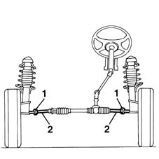

4110A14 STEERING WHEEL - Spoke alignment - Includes. checking and if necessary. adjusting. front wheel toe in
- Path
- Procedures > 41 STEERING > 4110 STEERING CONTROL AND LINKAGE > 4110A steering control > 4110A14 STEERING WHEEL - Spoke alignment - Includes. checking and if necessary. adjusting. front wheel toe in
- Kind
- repair procedure (removal / refitting; the operation number is the code)
- Applies to
- all engines; all production periods
- Interactive page
- https://sloeber94.github.io/elrnDB-fMltpl/en/#/2891674
Applies to: all engines; all production periods
Position the vehicle (in running order) on a lift with suitable equipment for checking the wheel geometry.
Make sure the steering wheel is perfectly straight and secure it in this position.
Raise the ramp.
1. Loosen the nuts securing the adjustable steering rods.
2. Tighten or loosen the steering casing rods to align the front wheels and achieve the correct toe in.
 | Measurement | Value | |
|---|---|---|---|
- | Toe-in (mm) | da -2 a -3 |

Applies to: all engines; all production periods
Tighten the nuts securing the adjustable steering rods to torque.
 | Fastening | Component | Ø | Value (daNm) |
|---|---|---|---|---|
- | Bolt | ADJUSTABLE STEERING LINKS | M14 x 1.5 | 5 |
Lower the vehicle.
Remove the vehicle from the lift.